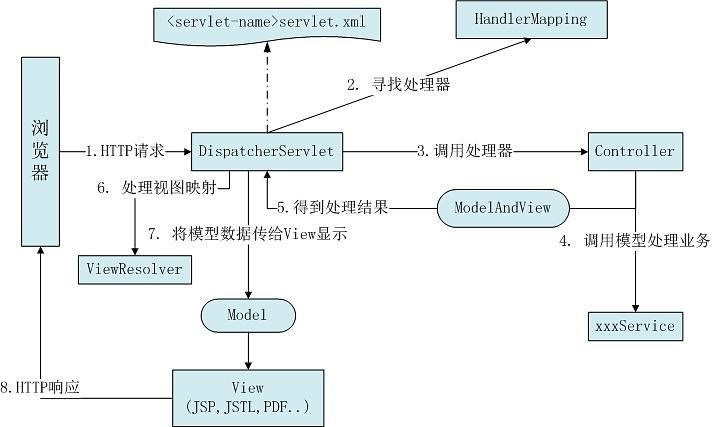

Spring、SpringMVC和SpringBoot的区别
基本概念
Spring
Spring是一个开源的容器框架，它包含了web层，业务层和持久层的组件，其核心是控制反转(IOC)和面向切面编程(AOP)，并且可以配置各种Bean，并维护Bean之间的关联关系。
SpringMVC
SpringMVC是一种web层的MVC开源框架，用于替代servlet处理和响应请求，简化web层的开发。
SpringBoot
SpringBoot是一个微服务框架，是在Spring基础上做了一些扩展，简化了应用的开发和部署。
SpringBoot是为了简化Spring应用的创建、运行、调试和部署等而出现的，使用它可以做到专注于Spring应用的开发。
SpringBoot通过注解简化了Spring中的xml配置。
更具体的
Spring原理和组成
Spring框架封装了一系列的功能组件模块，包括SpringJDBC，SpringMVC，SpringTest，SpringSecurity，SpringAOP，SpringORM等等。大体如下图：

SpringMVC原理
MVC主要包含模型（Model），视图（View）和控制器（Controller），像早期的Struts框架也是基于MVC模型设计的web层框架。SpringMVC的原理如下图：

SpringBoot原理
SpringBoot是在Spring框架基础上做了一些扩展，消除了设置Spring应用程序需要的XML配置，简化了Spring应用生态的开发、部署和管理。具体如下图：

结论
简单来说就是Spring包含SpringMVC，而SpringBoot是在Spring基础上做了一些扩展，使他更符合微服务架构模式的开发、管理。